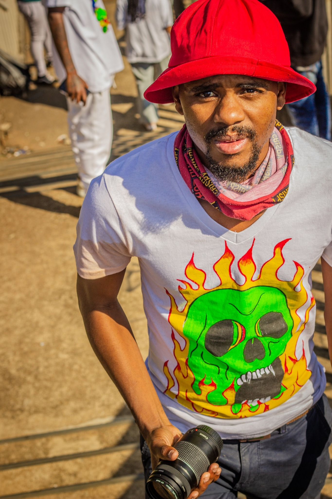

MY BIOMy name is Ziggy, im a talented graphic designer with a passion for coding. With over 8 years of experience in the design industry, I brings a unique blend of creative and technical skills to every project. Whether it's designing a new logo or building a website from scratch, I approaches each challenge with imagination and an eye for detail. Driven by the belief that imagination is more powerful than knowledge,I is constantly pushing the boundaries of what's possible in design. With his passion and expertise, I create visually stunning and functional designs that bring ideas to life." |  |